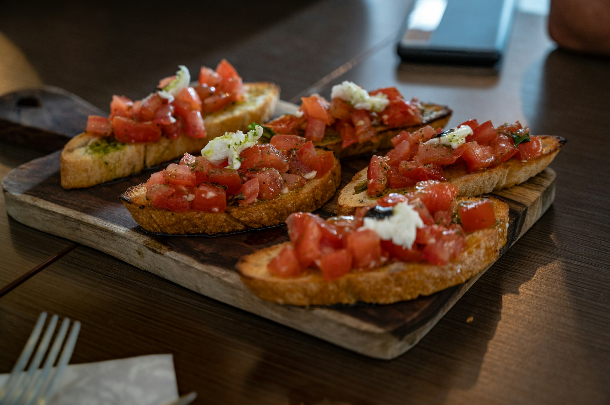

Bruschetta

Description
By following this simple recipe, you will be able to make bruschettas. The main ingredients are
bread, extravirgin olive oil and salt.
Ingredients
- 1 or more slices of bread (depends on the desired portion)
- Basil leaves
- Extra virgin olive oil
- A pinch of fine salt
- A pinch of black pepper
- Ripe tomatoes
Steps
- First of all, wash the ripe tomatoes and cut them into tiny cubes. After that, put them in a bowl.
- Then, place the slice(s) of bread in an oven or on a grill. If you choose the oven, preheat it to 180-200°C. Make sure all the sides of the bread slices are crispy.
- While the bread is being prepared, mix the tomato cubes, salt, basil leaves, black pepper and extra virgin olive oil in the bowl you took before. (Alternatively you can add the seasoning, ingredient by ingredient, without mixing when the bread is ready)
- When the bread is ready, place the mixture you have prepared on top of the bread slices. If you want, you can add more oil.
- Your bruschetta (or bruschettas) are ready to serve!